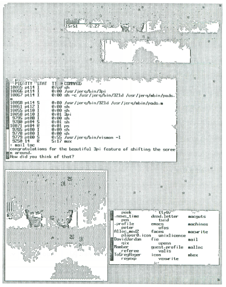
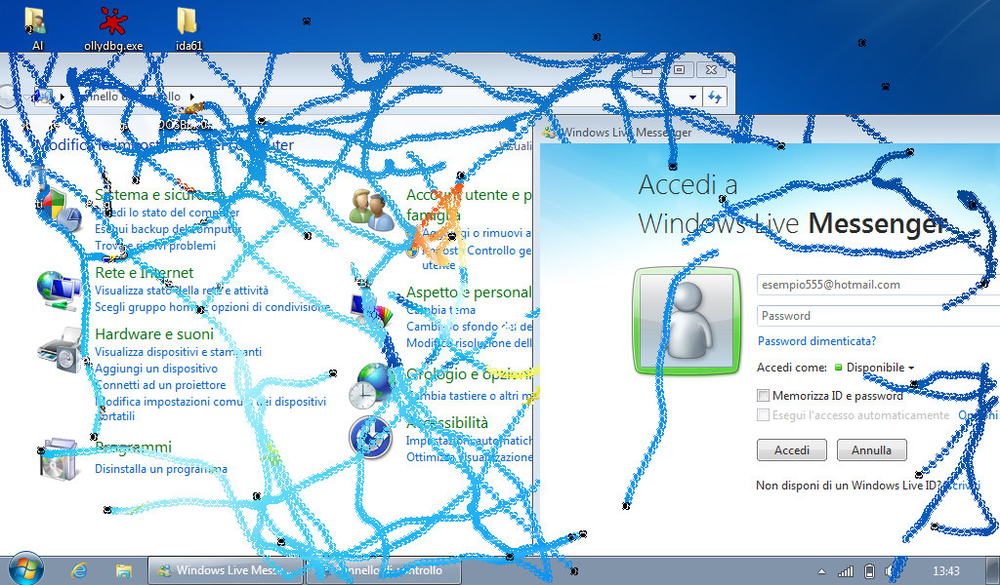

Hello folks, this post proves that this blog isn't dead at all. Actually I ran (and I'm running) into some personal issues which made my mind floating a little bit away, but I'm trying to recover myself little by little.
I want to post something different from the previous project, something that has been really important for me, because introduced me, a lot of time ago, to the world of the C programming. I'm talking about Crabs, a program developed in the 80s at the AT&T Bell Labs by Mark Manasse and Luca Cardelli, and made famous by an article published on "Scientific American" in September 1985 called "Computer recreations: at Bell Labs work is play and terminal diseases ate benign" written by A.K. Dewdney. I had a copy of the article when I was 10 years old and I fell completely in love with it, been reading and re-reading it again and again trying to imagine how it would have been. Successwively, I discovered (I was only a kid) that it was written in a language called C. The rest is history, at least for me :-).
So, the program was actually really simple. Described as one example of violation to the windows behaviour (one window should never be affected by the internal activities of another window nor by activities of the window system not concerning it directly), the program drew and managed the movements of some sylized crabs on the screen literally eating every pixel they were stepping on and, so, windows as well.

The rules for the crabs are simple:
- Crabs live on grey screen areas.
- On grey areas they move around randomly, but smoothly. The orientation of the crab icon is determined by its direction of movement, so that they always appear to move sidewise.
- When they bump into non-grey areas (including other crabs) they bite them by changing a little non-grey region into a grey region. After that they bounce off in a new random direction.
These rules were very simple because screens were only in black and white (we are talking about a Blit!). The core function to draw what we want on the screen is called BitBlt: given two bitmaps (in this case the crab and the destination portion of the screen), it is possible to combine the source and the destination pixels according to a specified raster operator and to write the result into the destination. The simplest operation is to just copy the source on the destination, but it's possible to use AND, OR, XOR, NOT and some other operators.
The article states that using the XOR operator is definitely mandatory to properly restore the background when the crab moves away, as every crab does the following:
- Draws itself in the initial position. Starts with a random direction and velocity.
- Removes itself from the old position (by drawing itself in XOR mode)
- Determines its new position, based on its current direction and velocity
- Looks to determine whether it is about to move on a grey area.
- Yes: Moves there. Goes to 5.
- No: Makes the new position grey by drawing a 4x4 grey pattern. Does not move. Picks a new random velocity, indipendent of the current velocity. Continues at 5.
- Draws itself (in XOR mode) in the new position, as determined in 4.1 or 4.2.
- Adds a random deviation to its velocity, as described above.
- Back to 2.
An implementation of Crabs can be easily found on the internet, at this address. The problem is that it's for 5620 DMD and 630 MTG terminals and that there are no other implementations around. I thought that I could write one my own, running on my Windows machine. Most of the algorithm is taken from the old implementation, but I had to adapt the rest to correctly run on a modern machine. I don't think that using the XOR trick works now: there are a lot of new problems, as the monitors are not anymore in B/W. Nothing too particular, as I just had to use some CreateBitmap, CreateCompatibleDC, CreateCompatibleBitmap, etc. One important thing I noticed is that it's far way better to have Aero and 3D effects disabled, as the CPU goes straight to 100% and the animation is slow.
Here's a screenshot of my implementation running on Windows 7:

As usual, here's the code: https://github.com/gbmaster/crabs. Here's a link to a page containing a couple of interesting PDFs on the subject: http://research.swtch.com/crabs.
Catch you soon and, remember, feel free to comment my post.